Load packages
library(nat.ggplot)
library(ggplot2)
library(dplyr)
#>
#> Attaching package: 'dplyr'
#> The following objects are masked from 'package:stats':
#>
#> filter, lag
#> The following objects are masked from 'package:base':
#>
#> intersect, setdiff, setequal, union1 — How to make a basic neuron plot
A minimal 2D view of neuron meshes with a predefined rotation matrix.
nat.ggplot::ggneuron(banc.meshes, rotation_matrix = banc_view)
#> Warning in rgl.init(initValue, onlyNULL): RGL: unable to open X11 display
#> Warning: 'rgl.init' failed, will use the null device.
#> See '?rgl.useNULL' for ways to avoid this warning.
#> Registered S3 method overwritten by 'nat':
#> method from
#> as.mesh3d.ashape3d rgl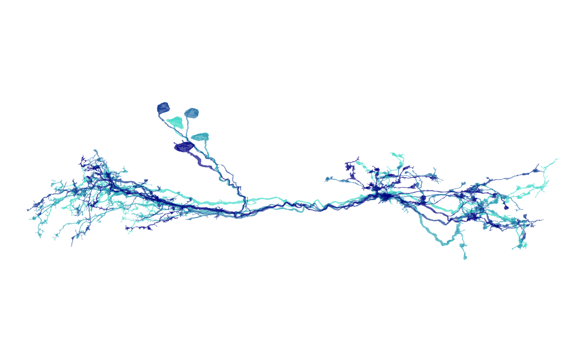
2 — How to make a layered context plot (brain + meshes + skeleton roots)
Layer meshes, a brain outline, and smoothed skeletons.
# Smooth skeletons for presentation
banc.skels_smoothed <- nat::nlapply(banc.skels, nat::smooth_neuron, sigma = 5000)
nat.ggplot::g.anat +
nat.ggplot::geom_neuron(
banc.brain_neuropil,
rotation_matrix = banc_view,
cols = c("grey90", "grey60"),
alpha = 0.3
) +
nat.ggplot::geom_neuron(
banc.meshes,
rotation_matrix = banc_view,
cols = c("#6D2C7B", "#FF1493", "green", "blue"),
alpha = 0.3
) +
nat.ggplot::geom_neuron(
banc.skels_smoothed,
size = 0.01,
alpha = 0.5,
root = 1,
rotation_matrix = banc_view,
cols = "black"
)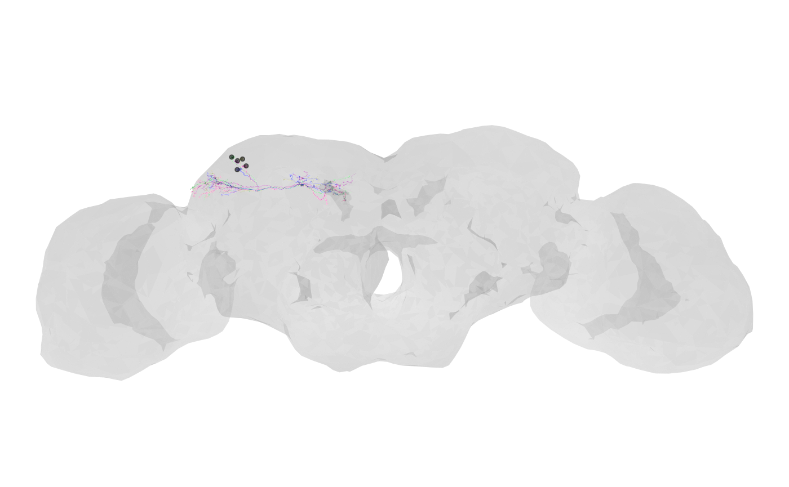
3 — How to capture a 3D view and reuse it in 2D (interactive; optional)
Use nat::plot3d() and rgl to rotate
interactively, then capture the view. Disabled during build.
if (requireNamespace("rgl", quietly = TRUE)) {
nat::plot3d(banc.brain_neuropil, alpha = 0.3, col = "grey")
nat::plot3d(banc.skels_smoothed)
my_view <- nat.ggplot::rgl_view()
nat.ggplot::ggneuron(banc.skels_smoothed, rotation_matrix = my_view$userMatrix)
}4 — How to make fixed ‘front/side/dorsal/ventral’ views
Define rotation matrices and reuse them to render consistent views.
views <- list(
side = structure(c(0.000764884985983372, 0.0153511334210634,
-0.99988180398941, 0, -0.940421104431152, -0.339961022138596,
-0.00593886896967888, 0, -0.340011894702911, 0.94031423330307,
0.0141764245927334, 0, -401395.405539944, -128785.809090088,
-5607.3408203126, 1), dim = c(4L, 4L)),
front = structure(c(0.99931389093399, 0.0139970388263464,
-0.0342894680798054, 0, -0.0321401171386242, -0.132316529750824,
-0.990686297416687, 0, -0.0184037387371063, 0.991108655929565,
-0.131775915622711, 0, 0, 0, 0, 1), dim = c(4L, 4L)),
dorsal = structure(c(0.840221107006073, 0.537661552429199,
-0.0703445374965668, 0, -0.541468024253845, 0.838866174221039,
-0.0558210015296936, 0, 0.0289968233555555, 0.0849913582205772,
0.9959596991539, 0, 0, 0, 0, 1), dim = c(4L, 4L)),
ventral = structure(c(0.945645987987518, -0.325197845697403,
3.18996608257294e-05, 0, -0.30071958899498, -0.874427616596222,
0.380715191364288, 0, -0.123779848217964, -0.360031485557556,
-0.924692392349243, 0, 0, 0, 0, 1), dim = c(4L, 4L))
)
nat.ggplot::ggneuron(
banc.meshes,
rotation_matrix = views$front,
cols1 = c("#8B1A89", "#FF69B4"),
cols2 = c("grey95", "grey85"),
alpha = 0.8,
info = "Front view"
)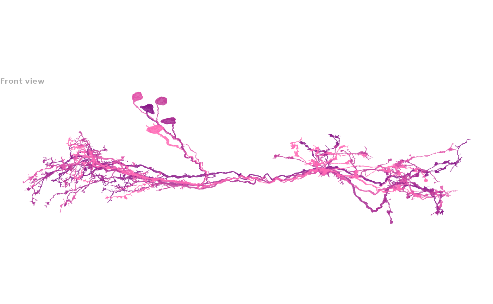
5 — How to make a brain neuropil backdrop
Render the neuropil mesh as a translucent context layer.
nat.ggplot::ggneuron(
banc.brain_neuropil,
rotation_matrix = banc_view,
cols1 = c("orange", "#EFC7E6"),
alpha = 0.1
)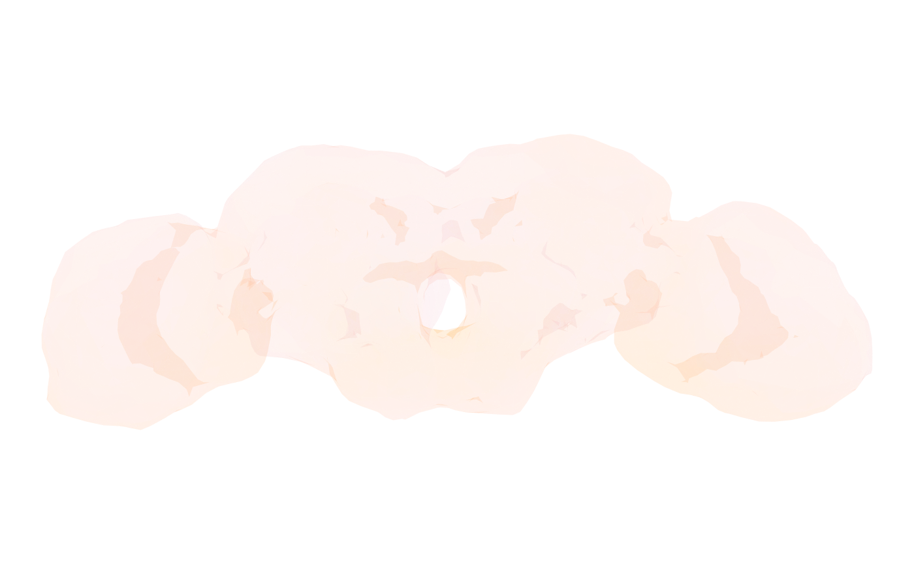
6 — How to make neuron plots with custom colours
Single colour, gradient, and per-neuron palettes.
# Single colour
nat.ggplot::g.anat +
nat.ggplot::geom_neuron(
banc.skels_smoothed,
rotation_matrix = banc_view,
cols = "purple"
)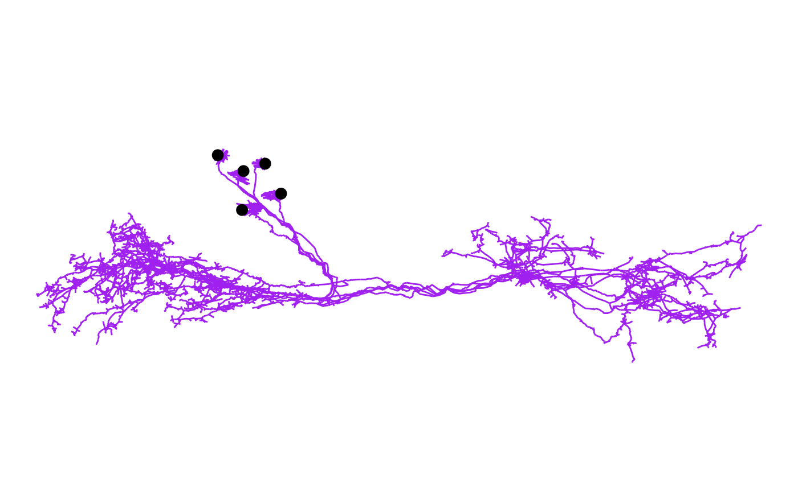
# Gradient along arbour / depth
nat.ggplot::g.anat +
nat.ggplot::geom_neuron(
banc.meshes[1],
rotation_matrix = banc_view,
cols = c("purple", "orange")
)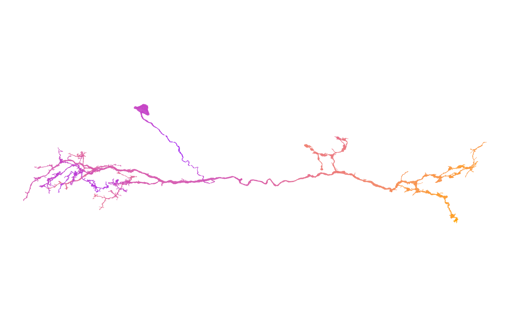
# Distinct colours per neuron
neuron_colours <- c("#FF6B6B", "#4ECDC4", "#45B7D1", "#FFA07A", "#98D8C8")
nat.ggplot::g.anat +
nat.ggplot::geom_neuron(
banc.brain_neuropil,
rotation_matrix = banc_view,
cols = c("grey95", "grey80"),
alpha = 0.2
) +
nat.ggplot::geom_neuron(
banc.skels_smoothed,
rotation_matrix = banc_view,
cols = neuron_colours
)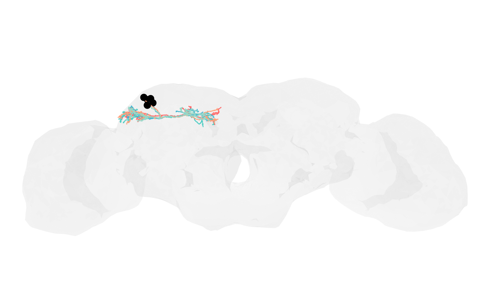
7 — How to make a synapse plot (inputs vs outputs)
Overlay synaptic sites as points; separate by prepost (0
= outputs, 1 = inputs).
syns_pre <- dplyr::filter(banc.syns, prepost == 0)
syns_post <- dplyr::filter(banc.syns, prepost == 1)
nat.ggplot::g.anat +
nat.ggplot::geom_neuron(
banc.meshes,
rotation_matrix = banc_view,
cols = c("grey60", "grey40"),
alpha = 0.8
) +
nat.ggplot::geom_neuron(
syns_pre,
rotation_matrix = banc_view,
root = 0.5,
cols = c("#EE4244", "#8B0000"),
alpha = 0.6
) +
nat.ggplot::geom_neuron(
syns_post,
rotation_matrix = banc_view,
root = 0.5,
cols = c("#1BB6AF", "#121B56"),
alpha = 0.6
)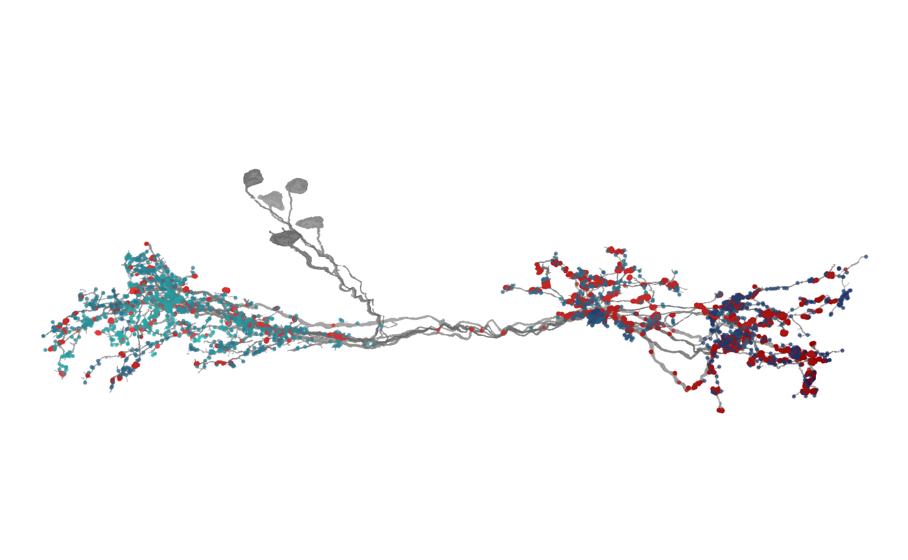
8 — How to make an axon–dendrite split plot
Colour compartments using flow-centrality-based identities.
# Single neuron
nat.ggplot::ggneuron(
banc.neurons.flow[[1]],
threshold = 20000,
rotation_matrix = banc_view,
info = paste("neuron:", names(banc.neurons.flow)[1])
)
#> Warning in nat::stitch_neurons_mst(dendrites, threshold = threshold): Could not
#> connect two vertices as edge length40570.11 is above threshold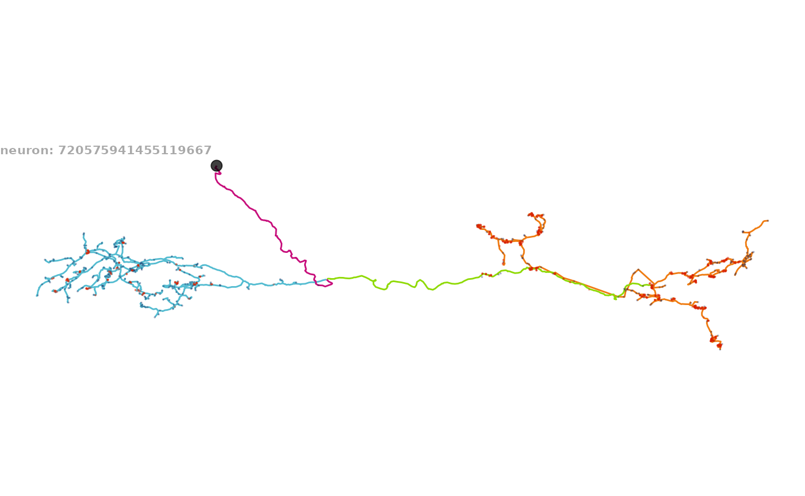
# Multiple neurons (with optional brain volume)
nat.ggplot::ggneuron(
banc.neurons.flow,
# volume = banc.brain_neuropil,
threshold = 20000,
rotation_matrix = banc_view,
info = "LHPD2a1 neurons:\n axon (orange), dendrite (cyan), primary neurite (purple), linker (green)\n inputs (navy), outputs (red)"
)
#> Warning in nat::stitch_neurons_mst(dendrites, threshold = threshold): Could not
#> connect two vertices as edge length40570.11 is above threshold
#> Warning in nat::stitch_neurons_mst(dendrites, threshold = threshold): Could not
#> connect two vertices as edge length48970.73 is above threshold
#> Warning in nat::stitch_neurons_mst(dendrites, threshold = threshold): Could not
#> connect two vertices as edge length52407.35 is above threshold
#> Warning in nat::stitch_neurons_mst(dendrites, threshold = threshold): Could not
#> connect two vertices as edge length49254.28 is above threshold
#> Warning in nat::stitch_neurons_mst(dendrites, threshold = threshold): Could not
#> connect two vertices as edge length27245.48 is above threshold
#> Warning in nat::stitch_neurons_mst(dendrites, threshold = threshold): Could not
#> connect two vertices as edge length25094.17 is above threshold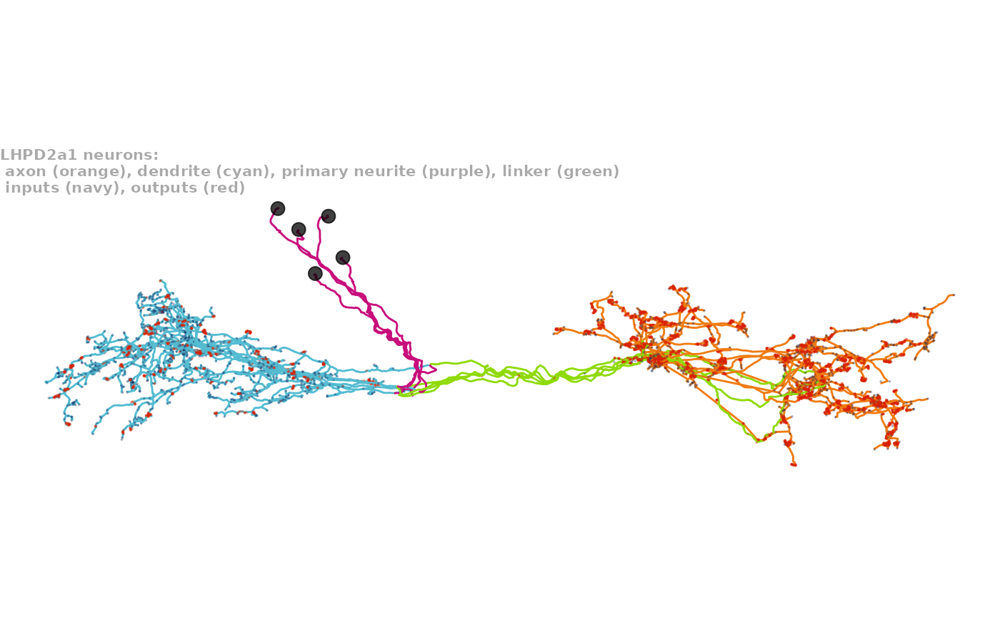
9 — How to make a figure with zoom-to-bounds
Compute a bounding box in the rotated plane; zoom with
ggplot2::coord_fixed().
mesh_bounds <- do.call(rbind, lapply(banc.meshes, function(mesh) {
vertices <- t(mesh$vb[-4, ])
if (!is.null(banc_view)) {
vertices <- t(banc_view[1:3, 1:3] %*% t(vertices))
}
data.frame(X = vertices[, 1], Y = vertices[, 2])
}))
x_range <- range(mesh_bounds$X)
y_range <- range(mesh_bounds$Y)
x_padding <- diff(x_range) * 0.1
y_padding <- diff(y_range) * 0.1
nat.ggplot::g.anat +
nat.ggplot::geom_neuron(
banc.brain_neuropil,
rotation_matrix = banc_view,
cols = c("grey95", "grey85"),
alpha = 0.3
) +
nat.ggplot::geom_neuron(
banc.meshes,
rotation_matrix = banc_view,
cols = c("grey60", "grey40"),
alpha = 0.8
) +
nat.ggplot::geom_neuron(
banc.neurons.flow,
threshold = 15000,
root = 2,
size = 0.1,
rotation_matrix = banc_view
) +
ggplot2::coord_fixed(
xlim = c(x_range[1] - x_padding, x_range[2] + x_padding),
ylim = c(y_range[1] - y_padding, y_range[2] + y_padding)
) +
ggplot2::theme(
plot.background = ggplot2::element_rect(fill = "white", color = NA),
plot.title = ggplot2::element_text(hjust = 0.5, size = 14, face = "bold"),
plot.subtitle = ggplot2::element_text(hjust = 0.5, size = 10),
plot.margin = ggplot2::margin(10, 10, 10, 10)
) +
ggplot2::labs(
title = "LHPD2a1",
subtitle = "lateral horn output neurons from the BANC connectome"
)
#> Warning in nat::stitch_neurons_mst(dendrites, threshold = threshold): Could not
#> connect two vertices as edge length40570.11 is above threshold
#> Warning in nat::stitch_neurons_mst(dendrites, threshold = threshold): Could not
#> connect two vertices as edge length48970.73 is above threshold
#> Warning in nat::stitch_neurons_mst(dendrites, threshold = threshold): Could not
#> connect two vertices as edge length52407.35 is above threshold
#> Warning in nat::stitch_neurons_mst(dendrites, threshold = threshold): Could not
#> connect two vertices as edge length49254.28 is above threshold
#> Warning in nat::stitch_neurons_mst(axon, threshold = threshold): Could not
#> connect two vertices as edge length19129.53 is above threshold
#> Warning in nat::stitch_neurons_mst(dendrites, threshold = threshold): Could not
#> connect two vertices as edge length27245.48 is above threshold
#> Warning in nat::stitch_neurons_mst(dendrites, threshold = threshold): Could not
#> connect two vertices as edge length25094.17 is above threshold
#> Coordinate system already present.
#> ℹ Adding new coordinate system, which will replace the existing one.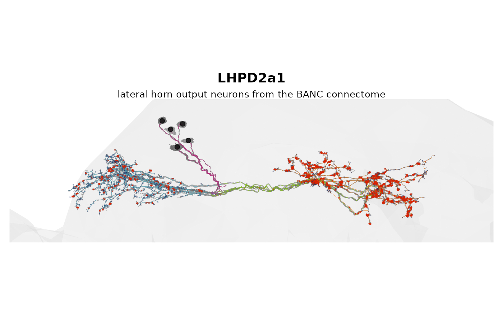